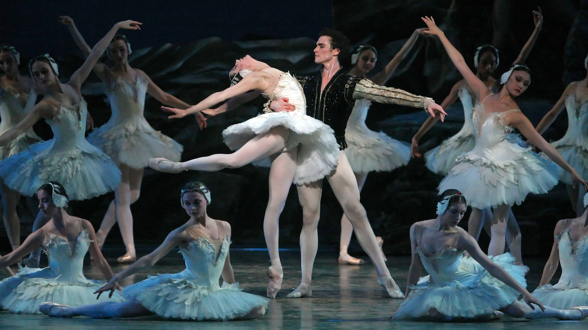

O Lago dos Cisnes
No castelo realiza-se com toda a realeza o aniversário do príncipe Siegfried. A rainha oferece ao filho como presente um Baile e pede-lhe que, no dia seguinte, escolha uma esposa entre as convidadas da festa. Quando os convidados saem do castelo, um grupo de cisnes brancos passa perto do castelo. Enfeitiçado pela beleza dos cisnes, o príncipe decide caçá-las.
O lago do bosque e as suas margens pertencem ao reino do mago Rothbart , que domina a princesa Odette e todo o seu séquito sob a forma de uma ave de rapina . Rothbart transformou Odette e as suas companheiras em cisnes, e só à noite lhes permite recuperarem a aparência humana. A princesa só poderá ser liberta por um homem que a ame. Siegfried, louco de paixão pela princesa das cisnes, jura que será ele a quebrar o feitiço do mago.
Na corte da Rainha aparece um nobre cavalheiro e sua filha. O príncipe julga reconhecer a filha do cavalheiro a sua amada Odette, mas, na realidade, os dois são o mago Rothbart e sua filha , Odile. A dança com o cisne negro decide a sorte do príncipe e da sua amada Odette : enfeitiçado por Odile, Siegfried proclama que escolheu Odile como sua bela futura esposa , quebrando assim o juramento feito a Odette
Os cisnes brancos tentam em vão consolar a sua princesa, que é destroçada pela decisão do príncipe, aceitando a sua má sorte. Nesse momento, surge o príncipe Siegfried que explica à donzela como o mago Rothbart e a feiticeira Odile o enganaram. Ela o perdoa e os dois renovam os votos de amor um pelo outro. Nesse momento, aparece o mago Rothbart e tenta matar Odette. O príncipe corta as asas de Rothbart fazendo com que ele perca seus poderes, e tendo renovado seus votos de amor, se casa com Odette.